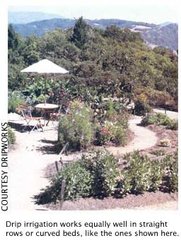

Irrigation Made Easy
When rain is scarce, a low-cost drip irrigation system will save time and use about half as much water as conventional sprinkler irrigation.
By George DeVault
August/September 2002
When the rain doesn't come, a low-cost drip irrigation system will save you time and use about half as much water as conventional sprinkler irrigation.
Hand over that Hose
Although it may seem very satisfying to water by hand, if you dig into the soil when you're finished you will find only the top inch or so is wet. Most of us don't have the patience or time to water properly by hand. Giving a 20x3-foot vegetable bed the inch or more of water it needs during the heat of summer would leave you holding the hose for almost a half an hour (assuming your hose can deliver 2 gallons per minute). Even if you had the patience required, the water flows so fast, much of it runs off along the soil's surface rather than sinking in.
Using a sprinkler also has several disadvantages compared to drip irrigation. Sprinkling increases the spread of plant diseases, especially if you water in the evening when leaves have less chance to dry off quickly. Sprinkler irrigation also uses more water than drip irrigation, wastes water on weeds in the rows and creates muddy paths. Your best bet is drip irrigation. -Steve Reiners, Ph.D., associate professor of horticultural sciences, Cornell University.
:The best fertilizer may be the footsteps of the farmer, as the Chinese proverb says. But all of the fertilizer and shoe leather in the world won't raise so much as a hill of beans without water.
Just ask anyone who farms in the desert, in places like Israel, southern California and southeastern Pennsylvania, where my family and I raise about four acres of certified organic vegetables, cut flowers, herbs and blueberries.
Normally we receive about 40 inches of rain annually (sometimes followed by brilliant rainbows like the one shown at left.) The trouble is we haven't received anything close to normal rainfall in more than a year. Most areas in Pennsylvania now face the worst drought in recorded history. And this comes right on the heels of worst drought in 100 years, which occurred only three years ago. Whether we blame it on global warming, the greenhouse effect, El Nino or La Nina, the harsh reality is drought emergencies have been declared in Pennsylvania in five of the last seven years.
State and federal agriculture officials are urging cash grain farmers to purchase crop insurance. As organic market gardeners, our farm is not eligible for the program. Instead we've invested our hard-earned cash into the best crop assurance we know: drip irrigation equipment.
For an investment of a few hundred dollars, our irrigation system allows us to gross $15,300 per acre from our high-value organic vegetables and flowers, even in the driest years. That's as much as many farmers get in a good year from 200 acres of corn, 261 acres of soybeans or 424 acres of wheat. This simple, low-cost irrigation equipment also works well in home gardens.
Drip irrigation slowly and steadily delivers water - drip, drip, drip - right where it's needed most, to the crop's root zone. Unlike overhead sprinklers, no water is lost to evaporation. There are no mud puddles. We're not watering the weeds.
This is a low-volume, low-pressure system. It runs on normal household water pressure, and uses minimal water and electricity. The system is so simple all you need to put it together is a sharp pocketknife, a punch and a flathead screwdriver.
FROM DESPERATION TO DRIP
We learned the hard way that something more than a few garden hoses and lawn sprinklers is essential to having a reliable garden harvest. In spring of 1988, I planted 100 blueberry bushes, 24 heirloom apple trees and 500 raspberry plants. By mid-May, the rain had stopped. The only protection between my new plants and the broiling sun was a thick mulch of rye straw. My plants had to get a drink, and fast. But the phones at irrigation supply houses throughout the region already were ringing nonstop. When I finally did get through, no one had much time or equipment for a market gardener.
In desperation I roped three 55-gallon drums into the bed of my pickup, grabbed four 5-gallon buckets, connected 400 feet of garden hose to the spigot a the back of the house and headed for the fields.
Water Ware
For five weeks, I came home from my day job and hauled water until the sun set. It became my mantra: Water the blueberries, water the Orchard, water the raspberries.
I worked, and it worked. The apple trees and blueberries survived. Only a couple of raspberry plants died. Our children had fun splashing in the barrels of cool water in 100-degree heat. And I learned my lesson.
In April 1989, 1 bought 900 feet of 1/2-inch supply hose, 8,000 feet of drip tape and all the necessary fittings. When everything was hooked up, I turned on the water. It rushed through the supply line with a roar like a fire hose being charged. The drip tapes wriggled like long black snakes, grew fat, straightened out and began to weep water slowly. I could now water everything on the farm just by turning on the faucet and fiddling with a few valves from time to time. You can, too. Here's how:
Garden hoses connected to faucets at the front and back of our house deliver water to the supply hoses, also called mains or headers. Consider installing a screen or sand filter at the faucet, especially if you suspect your water may contain algae, sediment or other debris that could plug your drip lines.
For our mains, we prefer oval-shaped polyethylene tubing, called Flatube. You'll only spend about $55 for 250 feet of 1-inch-diameter Flatube. Since both hoses and drip tape come in such long rolls, it makes sense for several gardeners to collaborate on a purchase. Each section of main supply hose requires a garden-hose connector, an end plug and two hose clamps.
Unroll the supply hose along the entire length of each area to be irrigated, usually on the side nearest your water supply. We run our main supply hoses perpendicular to the contour of our gently rolling ground. Drip tapes follow crop rows across the mostly level contours.
Flatube is flexible, and cheaper than rigid PVC or aluminum pipe often used for irrigation mains. You can drive over it without damage, just as long as you straddle any fittings and raise implements such as mowers and garden tillers. If you do happen to cut or tear a supply hose - and sooner or later you will - it's easy to repair. Just cut away the damaged section with your pocketknife and close the gap with a hard plastic coupling and two hose clamps. The plastic fittings are easier to slide into the supply hose when they're wet.
Drip Irrigation benefits
Uses up to 50 percent less water than conventional systems Reduces weeds in (unwatered) paths Lessens stress on plants caused by wet-dry cycles of overhead watering Minimizes soil erosion and compaction Decreases leaf burn and diseases To maintain pressure, install a ball or gate valve in main supply hoses just past wherever water needs to be concentrated. We have one just beyond our blueberry patch. After the blueberries are watered, we turn off the valves on their individual drip tapes. Then we open the ball valve, sending the full force of the water uphill to the adjoining vegetable field. Another ball valve is located in the middle of the vegetable garden supply hose so we can water the vegetables in two zones.
Wherever you want to attach a drip line, make a hole in the supply hose. The hole punch needed for Flatube, which resembles a sawed-off screwdriver, costs about $7. (See photo above.) If you punch a hole in the wrong place, it's easy enough to fix with a "goof plug," which costs 50 cents.
Next, install fittings to hold the drip tapes that water the rows. The Flatube system requires only one barbed fitting for each drip line. These fittings come with a winged on/off valve, and cost only $1.50 each. It's easier to make repairs and regulate pressure when you can control each line individually.
Fasten your drip tape - sometimes called T-Tape - to the fittings and tighten the screw collar. Make sure the on/off valve is switched off. Drip tape is actually a thinwalled hose, but it comes packaged as flat as cellophane tape and tightly rolled on a cardboard spool. Different thicknesses are available. Six-millimeter (6-mm) tape is usually sold for single-season use; 15mm tape can last many years. A 100-foot roll of durable 15-mm drip tape costs $8.50; a 1,500foot roll of 8-mm tape costs $71.
Unroll the drip tape and cut to the length of each row anchoring the far end with 6-inch-long ground staples. We make our own anchors by cutting short pieces off a coil of heavy wire. It doesn't hurt to put a few staples along the drip tape to keep it next to the row. After you've cut the drip tape, don't forget to seal the end. You can choose from all kinds of fancy doodads that cost a nickel to 13 cents, or you can seal the end yourself with a pocketknife and a 3-inch piece of drip tape. Fold the end of the tape over on itself twice, bend it in the middle and slide it inside the short piece of tape you've cut, to form a sleeve over the tape's end. We've never had one come undone. If you need to flush the line, just slide off the sleeve section, unfold the end of the tape and let the water flow.
After you've connected all the drip lines, charge your supply hose. As you open each tape valve, you can see and hear that it's getting water. If the tape pops off, just turn the valve off, reattach the tape and try again. Once the tapes fill with water, the weight of the water will make them easy to straighten out and place in the rows.
Irrigation design engineers spend countless hours calculating the correlations between water flow, friction and pressure loss. We've never had to worry about such things. As long as your tapes are less than 600 feet long and fairly level, you shouldn't have any problems.
Your water pressure, water flow, the lay of your land, and the number and length of your tapes will determine the area you can irrigate at one time. When we open a drip valve and don't hear the rush of water, we know we've overextended our system. We shut that valve and water the rows with the open drip tapes. Then we close those valves and open up the next set of valves. You will develop a feel for it. Be sure to watch for water spraying and overly saturated spots. Both are signs of damaged tape, which was our biggest problem in the drought of 1999: replacing tapes after voles kept chewing through them to wet their whistles.
When the season is over, we simply drain the supply hoses and disconnect the tapes. Lightweight tapes in annual vegetable crops get recycled for various uses on our greenhouses, cold frames and other structures. Heavier tapes, like we use in the blueberries, are left in place under a protective layer of mulch.
Supply lines are rolled up and stored in the barn We've been using the same main supply hose for 13 years. It's stained, sunbleached and looks pretty shabby, but it still does the job.
Our drip irrigation system has provided more than a decade of service and is still going strong. It has saved us water and time, and has protected our produce from the dangers of drought. As far as we're concerned, that makes drip irrigation the best crop insurance money can buy.
Sources
DripWorks
190 Sanhedrin Circle
Willits, CA 95490-8753
(707) 459-6323
www.dripworksusa.com
Free Catalog
Peaceful Valley Farm Supply
P.O. Box 2209
Grass Valley, CA 95945
(888) 784-1722
www.groworganic.com
Free Catalog
 |
|
 |
|
|
 |
|